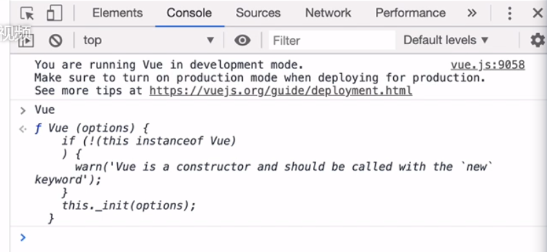

安装：
1.直接script引入：
<!-- 开发环境版本，包含了有帮助的命令行警告 -->
<script src="https://cdn.jsdelivr.net/npm/vue@2/dist/vue.js"></script>
|
怎样校验是否引入vue？ console控制台输入vue回车

- npm 安装
创建目录，
（npm init -y 初始化项目）
npm install vue 安装vue
3.vue cli 命令行工具
Vue CLI需要node.js>=8.9版本(推荐8.11.0+)可以使用nvm或者nvm-windows在同一台电脑中管理多个Node版本
命令： npm install -g @vue/cli
或者
yarn global add @vue/cli
使用： vue create 项目名
（
2.9.6 初始化项目是用 vue init webpack my-project
3.0以上 初始化项目是用 vue create my-project
）
4.bower
bower install vue
5.AMD模块加载器
vue调试工具：Vue Devtools ,安装谷歌版插件，页面右键单击检查，选择vue标签
vue实例
控制条输入app.message=’jjfff’ 页面渲染内容也会变化
一开始没声明str，所以页面不会显示，控制台还会报警告提示str未定义，如果一开始不知道值可以先声明为null， 声明后便会被渲染到页面中
Object.freeze(data);会进行属性冻结，阻止修改属性，控制台app.message=’金峰’也会报错提示只读,也意味着响应系统无法再追踪变化。
除了数据 property，Vue 实例还暴露了一些有用的实例 property 与方法。它们都有前缀 $，以便与用户定义的 property 区分开来。例如：
app.$el ,app.$data,加上$都可以拿到实例的属性和方法
var data = { a: 1 }
var vm = new Vue({
el: '#example',
data: data
})
vm.$data === data // => true
vm.$el === document.getElementById('example') // => true
// $watch 是一个实例方法
vm.$watch('a', function (newValue, oldValue) {
// 这个回调将在 `vm.a` 改变后调用
})
<body>
<div id="app">
{{message}}
<p>{{str}}</p>
</div>
<script src="vue.js"> </script>
<script>
const data={
message:"我的第一个vue程序",
//str:null, 声明后便会被渲染到页面中
}
//Object.freeze(data);
// 报错：vue.js:4643 Uncaught TypeError: Cannot assign to read only property 'str' of object '#<Object>'
//at Vue.proxySetter [as str] (vue.js:4643:30)
//at demo1.html:25:13 */
const app=new Vue({
el:"#app",
data:data,
})
app.$watch("message",function(newval,oldval){
console.log(newval,oldval)
});
app.str="新加的字符串str";
</script>
|
el:Vue实例挂载的元素节点,
生命周期：
beforeCreate:在实例初始化之后,进行数据侦听和事件/侦听器的配置之前同步调用。
created:在实例创建完成后被立即同步调用。在这一步中，实例已完成对选项的处理，意味着以下内容已被配置完毕：数据侦听、计算属性、方法、事件/侦听器的回调函数。然而，挂载阶段还没开始，且 $el property 目前尚不可用。
beforeMount:在挂载开始之前被调用：相关的 render 函数首次被调用。该钩子在服务器端渲染期间不被调用。
mounted:实例被挂载后调用，这时 el 被新创建的 vm.$el 替换了。如果根实例挂载到了一个文档内的元素上，当 mounted 被调用时 vm.$el 也在文档内。
注意 mounted 不会保证所有的子组件也都被挂载完成。如果你希望等到整个视图都渲染完毕再执行某些操作，可以在 mounted 内部使用 vm.$nextTick： 该钩子在服务器端渲染期间不被调用。
mounted: function () {
this.$nextTick(function () {
// 仅在整个视图都被渲染之后才会运行的代码
})
}
|
beforeUpdate:在数据发生改变后，DOM 被更新之前被调用。这里适合在现有 DOM 将要被更新之前访问它，比如移除手动添加的事件监听器。
该钩子在服务器端渲染期间不被调用，因为只有初次渲染会在服务器端进行。
updated:在数据更改导致的虚拟 DOM 重新渲染和更新完毕之后被调用。
当这个钩子被调用时，组件 DOM 已经更新，所以你现在可以执行依赖于 DOM 的操作。然而在大多数情况下，你应该避免在此期间更改状态。如果要相应状态改变，通常最好使用计算属性或 watcher 取而代之。
注意，updated 不会保证所有的子组件也都被重新渲染完毕。如果你希望等到整个视图都渲染完毕，可以在 updated 里使用 vm.$nextTick：
updated: function () {
this.$nextTick(function () {
// 仅在整个视图都被重新渲染之后才会运行的代码
})
}
|
activated:被 keep-alive 缓存的组件激活时调用。该钩子在服务器端渲染期间不被调用。
deactivated:被 keep-alive 缓存的组件失活时调用。该钩子在服务器端渲染期间不被调用。
beforeDestory:实例销毁之前调用。在这一步，实例仍然完全可用。该钩子在服务器端渲染期间不被调用。
destoryed:实例销毁后调用。该钩子被调用后，对应 Vue 实例的所有指令都被解绑，所有的事件监听器被移除，所有的子实例也都被销毁。该钩子在服务器端渲染期间不被调用。
errorCaptured:在捕获一个来自后代组件的错误时被调用。此钩子会收到三个参数：错误对象、发生错误的组件实例以及一个包含错误来源信息的字符串。此钩子可以返回 false 以阻止该错误继续向上传播。
你可以在此钩子中修改组件的状态。因此在捕获错误时，在模板或渲染函数中有一个条件判断来绕过其它内容就很重要；不然该组件可能会进入一个无限的渲染循环。
ex:
const app = new Vue({
el: "#app",
data: data,
beforeCreate() {
//console.log("箭头函数this指向：", this);
console.log("beforeCreate创建前状态");
console.log("el :", this.$el);
console.log("data :", this.$data);
console.log("message :", this.message);
},
created() {
//console.log("箭头函数this指向：", this);
console.log("created创建完毕状态");
console.log("el :", this.$el);
console.log("data :", this.$data);
console.log("message :", this.message);
},
beforeMount() {
console.log("beforeMount挂载前状态");
console.log("el :", this.$el);
console.log("data :", this.$data);
console.log("message :", this.message);
},
mounted() {
console.log("mounted挂载结束状态");
console.log("el :", this.$el);
console.log("data :", this.$data);
console.log("message :", this.message);
},
beforeUpdate() {
console.log("beforeUpdate更新前状态");
console.log("el :", this.$el);
console.log("data :", this.$data);
console.log("message :", this.message);
},
update() {
console.log("update更新完成状态");
console.log("el :", this.$el);
console.log("data :", this.$data);
console.log("message :", this.message);
},
beforeDestroy() {
console.log("beforeDestroy销毁前状态");
console.log("el :", this.$el);
console.log("data :", this.$data);
console.log("message :", this.message);
},
destroyed() {
console.log("destroyed销毁完成状态");
console.log("el :", this.$el);
console.log("data :", this.$data);
console.log("message :", this.message);
},
});
箭头函数this指向： Vue {_uid: 0, _isVue: true, $options: {…}, _renderProxy:
Proxy, _self: Vue, …}
beforeCreate创建前状态
demo1.html:28 el : undefined
demo1.html:29 data : undefined
demo1.html:30 message : undefined
demo1.html:34 created创建完毕状态
demo1.html:35 el : undefined
demo1.html:36 data : {__ob__: Observer}
demo1.html:37 message : 我的第一个vue程序
demo1.html:40 beforeMount挂载前状态
demo1.html:41 el : div#app
demo1.html:42 div#app__vue__: null……………………
demo1.html:44 message : 我的第一个vue程序
demo1.html:47 mounted挂载结束状态
demo1.html:48 el : div#app
demo1.html:49 div#app
demo1.html:50 data : {__ob__: Observer}
demo1.html:51 message : 我的第一个vue程序
demo1.html:54 beforeUpdate更新前状态
demo1.html:55 el : div#app
demo1.html:56 data : {__ob__: Observer}
demo1.html:57 message : 我的第一个vue程序
可以在控制台输入app.$destroy()，便会触发beforeDestroy和destroy
app.$destroy()
demo1.html:64 beforeDestroy销毁前状态
demo1.html:65 el : <div id="app">…</div>
demo1.html:66 data : {__ob__: Observer}
demo1.html:67 message : 我的第一个vue程序
demo1.html:70 destroyed销毁完成状态
demo1.html:71 el : <div id="app">…</div>
demo1.html:72 data : {__ob__: Observer}
demo1.html:73 message : 我的第一个vue程序
如果beforeCreate改为箭头函数的话，this就指向window了，
正常是不用箭头函数的，指向vue实例
beforeCreate:()=> {
console.log("箭头函数this指向：", this);
console.log("beforeCreate创建前状态");
console.log("el :", this.$el);
console.log("data :", this.$data);
console.log("message :", this.message);
},
箭头函数this指向： Window {window: Window, self: Window, document: document,
name: '', location: Location, …}
|
组件基础
- 组件组成：
data，初始数据
template，模板，dom
methods
watch/computed
生命周期
props，接受外部的参数
组件注册
- 组件名：xxx-xxx,buttonItem->button-item,注册时可以用驼峰式或小写字母＋短横线格式，引用时只能用短横线格式
- 注册方式：
全局注册
- Vue.component(“button-item”,{……}）父组件使用： <button-item *v-bind:parent-val*=”parentVal” v-on:*@child-event*=”chileEvent”>
- 缺点:即使不使用，（webpack）代码也会被打到生产包中
局部注册
- 用法：components:{inputItem, }
数据传递
-
组件传值
设置inheritAttrs:false后，渲染后的代码就不会显示test1=”test1”这种
<body>
<div id="app">
<button-item v-bind:parent-val="parentVal"> </button-item>
<button-item> </button-item>
<input-item></input-item>
</div>
<script src="vue.js"></script>
<script>
//全局组件
Vue.component("button-item",{
data: function(){
return {
count:0
};
},
/* data:{ 这种方式会报错
count:0
}, */
props:['parentVal'],
methods:{
handleAdd(){
this.count++;
}
},
watch:{},
computed:{},
beforeCreate(){
},
created() {
},
//template:'<button v-on:click="handleAdd">点击{{count}}</button>'
template:"<div><p>我是button-item组件:{{parentVal}}</p><input type='text' v-model='parentVal' /> </div>",
});
//局部组件
const inputItem={
data:function(){
return {
inputVal:'我是inputItem-inputVal的初始值'
}
},
template:'<div><p>{{inputVal}}</p><input type="text" v-model="inputVal" /> </div>',
};
//Object.freeze(data);
const app = new Vue({
el: "#app",
data: {
parentVal:"我是父级的值"
},
components:{
//inputItem, 两种写法都可以
"input-item":inputItem,
},
});
</script>
</body>
|